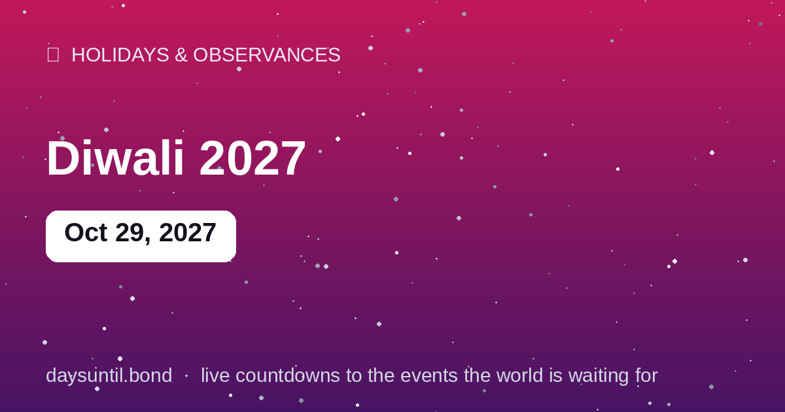

How Many Days Until Diwali 2027?
Diwali 2027 falls on Friday, October 29, 2027.
The live counter above updates every second in your local time zone. The date and weekday are shown in the event details.

Quick facts
| Date | Friday, October 29, 2027 |
|---|---|
| Category | Cultural observance |
| Date note | Check your local panchang for regional observance |
About Diwali 2027
Diwali 2027 is listed for Friday, October 29, 2027 in the New Delhi Lakshmi Puja calendar. Regional observance can vary with local panchang and tradition.
The live counter above ticks down to the selected calendar date in your time zone.
When is Diwali 2027?
For New Delhi, the 2027 Lakshmi Puja date is Friday, October 29, 2027. The 2027 Drik Panchang calendar lists Lakshmi Puja on October 29, and the Delhi High Court 2027 holiday schedule also lists Diwali on that date.
Diwali dates and observance can vary by region, local panchang and tradition. The date shown here is the current calendar date used by this countdown; check a trusted local calendar or temple announcement for your city.
What Diwali celebrates
Diwali, also called Deepavali, is widely known as the Festival of Lights. Across different communities and regions, it is associated with themes such as the victory of light over darkness, good over evil and knowledge over ignorance. Stories, prayers and customs differ, so no single account represents every family or tradition.
Many households light diyas, decorate entrances with rangoli, share sweets, visit relatives and take part in prayers. The way the festival is observed depends on local custom and family tradition.
The five-day Diwali period
Many calendars describe Diwali as part of a five-day sequence that includes Dhanteras, Naraka Chaturdashi or Choti Diwali, the main Lakshmi Puja evening, Govardhan Puja and Bhai Dooj. The exact names, order and dates can differ across regions.
The countdown on this page is for the main Diwali date stored in the calendar. It does not calculate individual puja muhurat or replace a location-specific panchang.
Why Diwali dates can differ
Diwali is tied to the Hindu lunisolar calendar and the Amavasya tithi. Because tithi boundaries are based on the positions of the Sun and Moon rather than midnight, the relevant observance can fall on different civil dates in different regions or calendars.
For the 2027 New Delhi calendar, Lakshmi Puja is listed on October 29, while the Amavasya tithi begins on the evening of October 28. This is why a date-only listing may look different from a local ritual timetable.
How to use this Diwali countdown
Use the live timer as a reminder of the calendar date, then confirm local puja times and observance details closer to the festival. If you are travelling, check local public-holiday notices, transport schedules and the calendar followed by your destination.
The date can be reviewed if a recognised regional calendar or official announcement changes. The countdown is a planning aid, not a universal religious ruling.
Your Diwali 2027 countdown milestones
It is easier to plan against fixed points than against a number that moves. These are the dates on which the countdown to Diwali 2027 passes each marker between now and the day itself — the last one falls on Thursday 28 October, when there will be 1 day left.
| Milestone | Day | Date | Remaining |
|---|---|---|---|
| 200 days | Monday | 12 April 2027 | 200 days to go |
| 100 days | Wednesday | 21 July 2027 | 100 days to go |
| 50 days | Thursday | 09 September 2027 | 50 days to go |
| 30 days | Wednesday | 29 September 2027 | 30 days to go |
| 14 days | Friday | 15 October 2027 | 14 days to go |
| 7 days | Friday | 22 October 2027 | 7 days to go |
| 3 days | Tuesday | 26 October 2027 | 3 days to go |
| 1 days | Thursday | 28 October 2027 | 1 day to go |
How the remaining time breaks down
337 days is the headline, but it is rarely the number that helps. 241 of those are weekdays and 96 fall on a weekend, which is the split that matters if you are planning around work. It is 48 weeks and 1 days, or roughly 11.1 months, or about 8,088 hours.
| Unit | Until Diwali 2027 |
|---|---|
| Days | 337 |
| Weeks | 48 weeks and 1 days |
| Months (approx) | 11.1 |
| Weekdays | 241 |
| Weekend days | 96 |
| Hours | 8,088 |
| Sleeps | 337 |
Working days are Monday to Friday and do not subtract public holidays, which vary by country and employer — the full month-by-month split is on our weekday page for Diwali 2027.